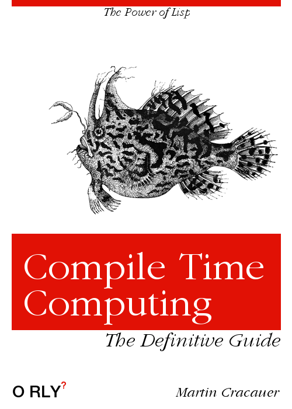

Существует заблуждение, что Lisp - это язык с динамической типизацией, который не предлагает проверку типов во время компиляции. Lisp - это программируемый язык программирования, что, конечно, не соответствует действительности.
(defun meh (p1) (declare (fixnum p1)) (+ p1 3)) (defun meh2 (p1) (declare (fixnum p1)) (+ p1 "8"))
2 compiler notes:typecheck-demo.lisp:7:3:
note: deleting unreachable code
warning:
Constant "8" conflicts with its asserted type NUMBER.
See also:
SBCL Manual, Handling of Types [:node]Compilation failed.
Вы можете объявить почти все, что вы бы сделали в обычных статически типизированных языках. Функциональный интерфейс:
(defun meh3a (p1)
(+ p1 3))
(declaim (ftype (function (fixnum) t) meh3a))
(defun meh3b ()
(meh3a "moo"))
==>
2 compiler notes:typecheck-demo.lisp:13:3:
note: deleting unreachable code
warning:
Constant "moo" conflicts with its asserted type FIXNUM.
See also:
SBCL Manual, Handling of Types [:node]Compilation failed.
Или вы можете вытащить объявление впереди, чтобы определение первой функции уже проверялось на объявление типа при определении функции:
(declaim (ftype (function (string) t) meh4a))
(defun meh4a (p1)
(+ p1 3))
(defun meh4b ()
(meh4a "moo"))
2 compiler notes:typecheck-demo.lisp:18:3:
note: deleting unreachable code
warning:
Derived type of P1 is
(VALUES STRING &OPTIONAL),
conflicting with its asserted type
NUMBER.
See also:
SBCL Manual, Handling of Types [:node]Compilation failed.
;; note that this is the first function failing
;; the second one compiles fine.
Очевидно, это не самый удобный синтаксис. Но это легко исправить с помощью программируемого языка программирования, в котором есть вычисления во время компиляции.
Итак, что мы хотим для этой демонстрации, так это возможность помещать типы аргументов непосредственно в список аргументов. Определение функции могло бы выглядеть так:
(defunt meh5c ((int p1) (int p2))
(+ p1 p2))
(meh5c 1 2) ; ==> 3
Итак, у нас есть новое имя вместо defun, и мы хотим написать один фрагмент вычисления времени компиляции, который позаботится как о фактическом defun, так и об объявлении типов. После того, как мы напишем этот макрос, мы просто хотим писать функции в новом синтаксисе.
Вот макрос, который это делает:
(defmacro defunt (name (&rest args) &body body)
"defun with optional type declarations"
`(progn
(declaim (ftype
(function
,(let (declares)
(dolist (arg args)
(push
(if (listp arg)
(if (equalp (string (first arg)) "int")
'fixnum
(first arg))
t)
declares))
declares)
t) ,name))
(defun ,name
,(loop for arg in args
collect
(if (listp arg)
(second arg)
arg))
,@body)))
Я объясню немного больше, давайте просто протестируем вот это:
;; simple use with no type declaration
(defunt meh5a (p1 p2)
(+ p1 p2));; one declared type, not the other
(defunt meh5b ((int p1) p2)
(+ p1 p2));; make sure this works
(defun meh5btest (p1)
(+ p1 "8"))(defunt meh5c ((int p1) (int p2))
(+ p1 p2))
Компиляция результатов meh5test, как и ожидалось, в
typecheck-demo.lisp:81:3:
note: deleting unreachable code
warning:
Constant "8" conflicts with its asserted type NUMBER.
See also:
SBCL Manual, Handling of Types [:node]Compilation failed.
Итак, вы написали этот макрос один раз, и с этого момента вы можете просто использовать его. Макрос кажется немного трудным для чтения программистам, которые еще не привыкли к Lisp. Я могу сказать вам, что я написал этот макрос, а не весь этот пост, когда ожидал полета, идущего со встречи разработчиков AmberMD на European Lisp Symposium.
Это быстро. И есть грамотные средства отладки. Я продемонстрирую отладку позже.
Возможность отладки вычислений во время компиляции имеет решающее значение. Можете ли вы представить себе пошаговое выполнение макроса препроцессора C или вычисление шаблона C++? Или использовать отладку printf (также известную как единственный настоящий отладчик) на C или C++ во время компиляции?
Вот тот же макрос с некоторыми комментариями:
(defmacro defunt (name (&rest args) &body body)
"defun with optional type declarations"
;; обратная кавычка переходит в "режим эха для кода", не
;; вычислять при запуске макроса
`(progn
;; этот макрос выпускает два определения для
;; компилятора:
;; 1 - декларацию типа декларации
;; 2 - определение функции - defun
(declaim (ftype
(function
;; запятая внутри обратной каавычки означает
;; "выполнение при запуске макроса"
,(let (declares)
(dolist (arg args)
(push
(if (listp arg)
;; Так же переводим для людей C, но не зависимо
;; от регистра
(if (equalp (string (first arg)) "int")
'fixnum
(first arg))
t)
declares))
;; вернуть этот список, который интегрирован в код.
;; Видите ли, поэтому у нас так много скобок. Потому что то,
;; что здесь является пассивным списком данных, превращается в
;; код без какого-либо переформатирования.
;; Прочтите ниже пошаговое объяснение того, что происходит
declares)
t) ,name))
(defun ,name
;; используйте здесь макрос цикла для той же цели,
;; что мы вручную собрали аргументы с помощью dolist
;; и push выше
,(loop for arg in args
collect
(if (listp arg)
(second arg)
arg))
,@body)))
;; результат вышеуказанного макроса затем передается в компилятор
;; Итак, здесь мы используем три уровня времени выполнения:
;; 1 - при запуске макроса
;; 2 - вывод макроса, который подается в компилятор
;; 3 - время выполнения, когда вы фактически вызываете результирующую функцию
За этим стоит следующая концепция:
один вызов макроса может вызвать несколько новых операторов. Мы используем это, чтобы генерировать как declare, так и defun из одного пользовательского определения.
внутри макроса вы можете контролировать, какой код запускается во время вызова макроса, а что передается компилятору. Имейте в виду, что в обоих случаях в вашем распоряжении полный язык. Одна из причин, по которой эти макросы могут быть немного трудными для чтения, заключается в том, что вам явно нужно переключаться между разными временами вычисления, а код имеет тот же синтаксис. Макрос препроцессора C или шаблон C++ используют разные языки во время компиляции и выполнения, поэтому немного более понятно, что и когда вычисляется. Конечно, вы не можете использовать свою обычную библиотеку во время компиляции, как в Lisp.
если вы не укажете иное, код внутри макроса выполняется во время раскрытия макроса. Возвращаемое значение - это то, что передается в компилятор. Возвращаемое значение скорее будет списком, списком операторов языка Лисп. Вот почему в Лиспе вы должны использовать синтаксис списка для кода. Понятно? Это важно. Вы создаете эту вещь с вложенными круглыми скобками, которая представляет собой список во время компиляции, и вы загружаете его в компилятор, так что список становится кодом.
кавычка(‘) или обратная кавычка (`) оставляет такие вещи как списки и не вычисляет их во время вызова макроса. Вот как вы возвращаете список (который является данными, а не вычислением) из макроса (который затем передается в компилятор).
Запятая (,) может использоваться внутри блока с обратной кавычкой(`), чтобы переключить время вычисления обратно на время вызова макроса. Ваш блок с запятыми также возвращает списки, и они интегрируются в блок с обратными кавычками.
Конструкция ,@ удаляет одну вложенность списка, поэтому она превращает ((foo bar)) в (foo bar). Это часто требуется, когда вы возвращаете коллекции элементов из собственных переменных макроса или блока с запятой. Это касается глубины макросов и некоторого неясного синтаксиса, но это не особенно сложно, учитывая инструменты отладки.
Итак, если вы хотите написать такие макросы:
получите редактор с автоматическим отступом для кода Lisp. Он также должен показать вам совпадающую открывающую скобку, когда вы вводите закрывающую скобку. Ни один программист на Лиспе не размещает эти скобки вручную. Это важно. Сосчитать эти вещи вручную сводит с ума.
приготовь несколько книг. «О Лиспе» Пола Грэма - бесплатная книга, в которой очень хорошо объясняются макросы Лиспа. Продолжать писать только на основе сообщения в блоге, вероятно, сложно